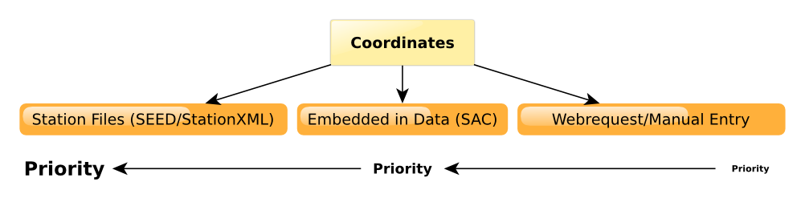

How LASIF Finds Coordinates¶
LASIF needs to know the physical coordinates of data recordings, derived processed data, and of all synthetics waveforms. Due to the large variety of supported formats and the possibility to freely mix formats as desired this is not a straightforward task. The SAC/RESP combination in wide use is a particular problem as it does not seperate station and waveform metadata. In general LASIF is only interested in station coordinates and not single instrument coordinates and treats the coordinates of instruments from one station to be equal within a certain tolerance. This is explained and justified in more detail further down the page.
A single strategy is employed to find the coordinates of any data recording:
- Use the network and station code of the waveform file and see if any SEED or StationXML file has coordinates for this station. If coordinates are found, use them - if not keep searching. Notably RESP files do not contain coordinates and this step will not work for them.
- Attempt to extract the coordinates from the actual waveform file. This only works for SAC files. If the file in question is a processed or synthetic data file, the original raw data recording will be located and used. If coordinates are found that way, they will be returned.
- If all else fails, a webrequest will be dispatched to ArcLink and IRIS in an attempt to get the coordinates or the user will have to manually enter the coordinates. There is currently no pretty interface to manually enter the coordinates so please contact the developers if that is something you need.
- A warning will be raised if all these steps failed and the user is expected to either remove the data in question or manually enter the coordinates.
The following image illustrates the procedure:
{kind=link}
Oftentimes one single seismic station contains several instruments. According to the SEED standard, these instruments are differentiated by different location strings. These can have slightly different coordinates, e.g. one instrument in a borehole, one at ground level.
LASIF is usually only interested in the coordinates of a station. To derive it, it checks the coordinates of all the station’s instruments and asserts they are equal to a certain tolerance. If not, it picks the first coordinate set it finds and raises a warning.
The tolerance is equal to either 0.01 degree (for lat/lng) or 1000 meters (for elevation and local depth).
This approach is justified when using LASIF for continental and global scale inversions. If your application has different demands, please contact the developers so a suitable solution can be found.
Keep in mind that this will trigger on stations that moved with time. This should be only a very small subset and thus corresponding stations should be removed.